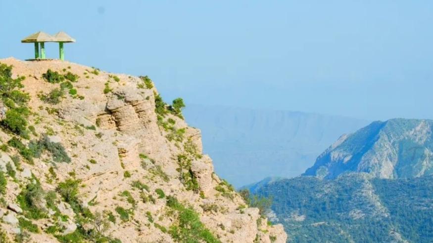
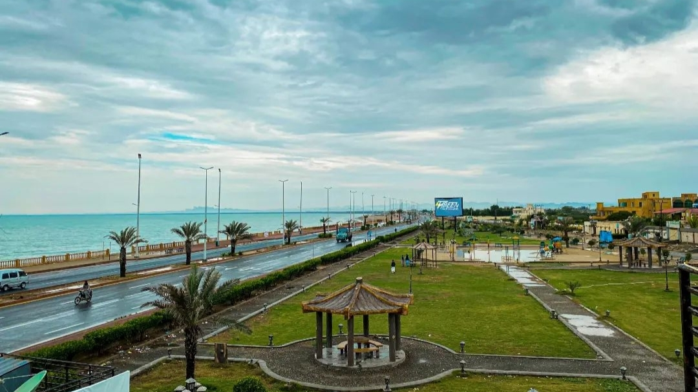
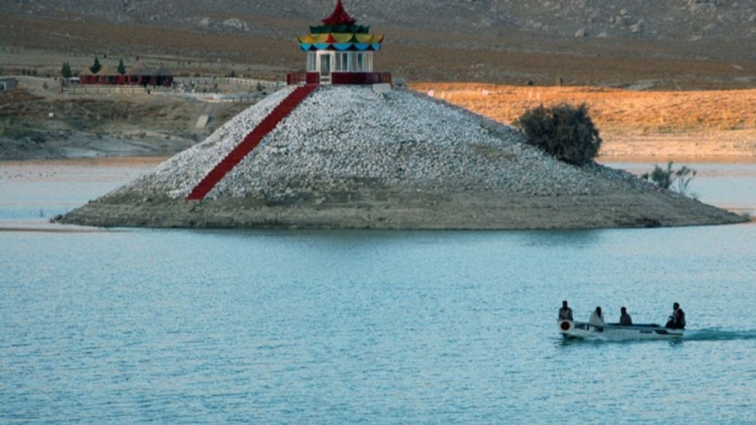

BALOCHSTAN:
Balochistan is the largest province of Pakistan. Comprising 44% of the country's land mass. It traces its history from times immemorial
when it was inhabited by Stone Age hunters. According to French Archaeologist Professor Jarrige, by 6,000 BC farmers on the Bolan
River were cultivating b/arley, wheat, dates using floodwater and storing their surplus in large mud bins. The people here were growing
and making pottery.
FAMOUS PLACES OF BALOCHISTAN:
ZIARAT:

On 29 October 2008, at around 4 am, Ziarat and surrounding areas were struck by an earthquake doublet. The first tremor, 6.2 magnitude,
lasted a couple of seconds, and was followed by a magnitude-6.4 tremor that lasted almost 30 seconds, destroying many mud houses
and
several government buildings. Neighbouring villages were also badly affected by the earthquake.
GWADAR:

Gwadar (Balochi/Urdu: گوادر) is a port city with located on the
southwestern coast of Balochistan, Pakistan. The city is located on the
shores of the Arabian Sea opposite Oman. Gwadar is the 100th largest city of Pakistan, according to the 2017 census. It was an overseas
possession of Oman from 1783 to 1958.[2] It is about 120 km (75 mi) southwest of Turbat, while the sister port city of Chabahar in Iran's
Sistan and Baluchestan province is about 170 km (110 mi) to the west of Gwadar. On 2 April 2021, Gwadar was declared the capital of the
South Balochistan region.
KUND MALIR:

Kund Malir' is a beach in Balochistan, Pakistan located in Hingol National Park, about 150 kilometers (93 mi) from Zero-Point on
Makran Coastal Highway.[1] It is located 236.8 kilometers (147.1 mi) west of Karachi, the largest city in Pakistan.[2] The drive
between Kund Malir and Ormara is considered to be scenic. The area is part of Hingol National Park, the largest in Pakistan.
HANNA LAKE:

In 1894, a small action dam Surrpull (Red Bridge) was constructed on the main Urak road to control flooding, and divert water, coming
catastrophically from snow melt and rain down the Zarghoon Ghar and Murddar Mountains Koh-i-Murdaar streams, into Hanna Lake
through its main canal. Over a century old in 1908, this lake was spread over an area of 818 acres with a holding capacity of over 220
million gallons of water and a depth of 49 feet (15 m).
Go to Home Page